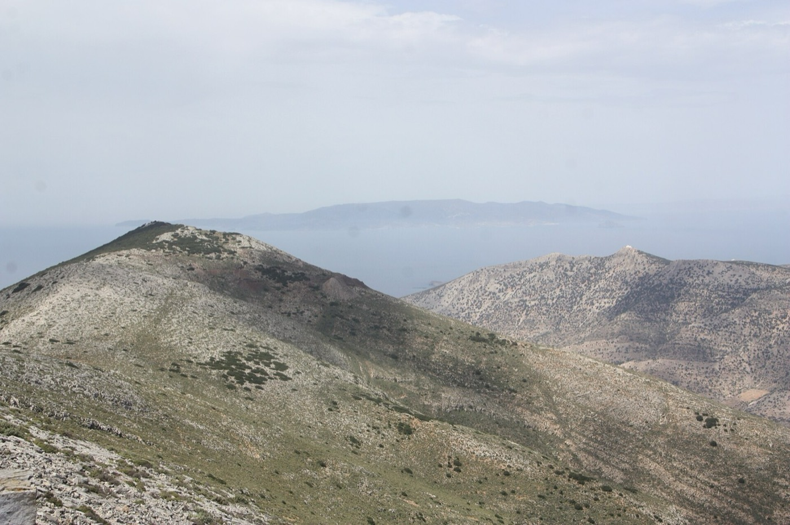

Sifnos
Plein air
De vieux chemins entre villages et chapelles, des routes tranquilles pour le vélo, et la mer tout autour de l’île.

Photo : Kkanak, CC BY-SA 4.0, via Wikimedia Commons

Randonnée
Sifnos possède un réseau de sentiers balisés, Sifnos Trails : dix itinéraires numérotés de 2,4 à 15 km, avec de courtes variantes. Le site indique pour chacun la longueur, la durée de marche et la difficulté. En été, partez tôt et emportez de l’eau et un chapeau ; les sentiers en altitude offrent peu d’ombre.
Quatre itinéraires pour commencer :
-
Sentier 4 : Cedars, Olive Trees and the Sea
Platys Gialos – Profitis Ilias Kontou – Fykiada – Platys Gialos
Une boucle au départ du terminus du bus à Platys Gialos : 11,4 km, environ 4 heures, raide par endroits. La variante 4A relie Vathi à la boucle (2,2 km).
-
Sentier 2 : Towards the Miraculous Saint
Kastro – Faros – Chrysopigi
5,8 km, environ 2 h 20. Depuis Faros, un sentier côtier continue en passant par Glyfo et Apokofto.
-
Sentier 1 : The Eternal Capitals
Agios Andreas – Kastro – Panagia Poulati – Artemonas
8,6 km, environ 3 heures, en passant par l’acropole antique et l’ancien chef-lieu.
-
Sentier 9 : The Wuthering North
Kambanario – Heronissos
2,4 km, environ 45 minutes, facile. L’arrêt de bus se trouve juste au-dessus de la plage de Heronissos.
Vélo
L’île est vallonnée ; un vélo électrique facilite les choses.
-
Exambela, Apollonia
Location de vélos électriques et sorties guidées à vélo électrique.
En mer
Les bateaux partent de la petite marina de Platys Gialos, à l’extrémité ouest de la plage, près de notre cap. Vous pouvez louer un petit bateau à la journée ou partir avec un skipper, pour faire le tour de l’île ou rejoindre l’îlot inhabité de Polyaigos et Kimolos.
-
Platys Gialos
Location de bateaux et sorties privées en mer, par exemple vers Polyaigos et Kimolos.
-
Calypso Boat Rental
Platys Gialos
Bateaux à louer à la journée. Nous n’avons pas pu vérifier de site web ; demandez-nous.
-
Sifnos Diving Center
Kamares
Le centre de plongée de l’île, avec des formations PADI. Demandez-nous leurs coordonnées actuelles.
Se déplacer
Le ferry du Pirée arrive à Kamares, le port. Un service de bus municipal relie Apollonia et Artemonas à Platys Gialos, Kamares, Kastro, Faros, Vathi et Heronissos ; les horaires changent selon la saison. Les taxis sont peu nombreux sur l’île : demandez-nous de vous aider à en réserver un. Pour voir davantage de l’île en une journée, louez une voiture ou un scooter :
-
Platys Gialos
Voitures, scooters et quads ; entreprise familiale.
-
Kamares
Voitures, motos, scooters et quads, avec des agences au port.
-
Apollonia
Voitures, remises au port de Kamares, dans les villages ou à Platys Gialos sur demande.
-
Apollonia
Voitures uniquement, livrées et récupérées à Kamares et dans les hôtels.
Ateliers de poterie : voir Culture.
Avec des enfants
- Plages de sable peu profondes : Platys Gialos, en contrebas, ainsi que Kamares, Vathi et Faros.
- Une courte marche avec retour en bus : le sentier 9 jusqu’à Heronissos, 45 minutes, facile.
- Une journée en bateau depuis Platys Gialos, avec un skipper.
- La visite d’un atelier de poterie, pour voir façonner les pots.

Photo : Kkanak, CC BY-SA 4.0, via Wikimedia Commons